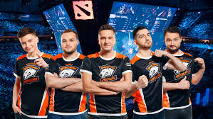
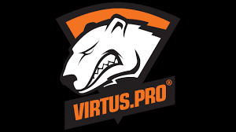

Virtus.pro
 Virtus.pro (VP, Виртус.про, Медведи) — российский киберспортивный проект, основанный 1 ноября 2003 года[6]. Команды организации — многократные чемпионы России и СНГ, обладатели множества международных медалей и чемпионских титулов[7]. С осени 2009 по апрель 2011 года проект был заморожен, а часть игроков выступала за такие проекты, как UNiTED и Iron Will[6]. В середине октября 2015 года было объявлено, что USM Holdings Алишера Усманова совместно с «ЮТВ Холдингом» инвестируют 100 млн долларов в Virtus.pro[8]. Организация создана 1 ноября 2003 года как команда в Counter-Strike. Позднее, в организации были открыты другие игровые направления: DotA — открыто в ноябре 2007, взяв полный состав команды maGe[9]. Дебютным турниром стал ASUS open cup Spring 2007, где они заняли первое место[10]. World of Tanks подразделение открыто в январе 2013 года. Дебютным турниром стал ESL Go4WoT #93, где они заняли второе место[11]. StarCraft подразделение создано в мае 2012 года. Дебютным турниром стал Playhem $75 Daily, где команда заняла третье место[12].
О проекте
 Организация создана 1 ноября 2003 года как команда в дисциплине Counter-Strike. Позднее, в организации были открыты другие игровые направления: DotA — открыто в ноябре 2007, взяв полный состав команды maGe[9]. Дебютным турниром стал ASUS open cup Spring 2007, где они заняли первое место[10]. World of Tanks подразделение открыто в январе 2013 года. Дебютным турниром стал ESL Go4WoT #93, где они заняли второе место[11]. StarCraft подразделение создано в мае 2012 года. Дебютным турниром стал Playhem $75 Daily, где команда заняла третье место[12]. Проект представляют профессиональные игроки, тренеры и менеджеры из России, стран СНГ и Западной Европы. За десять лет работы проекта, многократно менялось руководство и игроки. В разное время спонсорами проекта были BenQ[13], MelBet, APC, Tesoro. В 2013 году спонсорскую поддержку предоставляли Gametrix и BlackBerry. Логотипом проекта является белый медведь[14], но в заставках видеороликов на канале сайта youtube.com используется бурый медведь[15]. Официальная форма киберспортсменов — черные футболки с оранжевыми боками, с расположенным на нём черно-бело-оранжевым вариантом логотипа, либо полностью чёрный балахон с бело-оранжевой полосой на капюшоне[16]. После подписания организацией контракта с компанией «МегаФон», цветовая схема логотипа и формы изменилась, с классической: чёрный, белый, оранжевый, на новую: чёрный, белый, зелёный и фиолетовый[17].